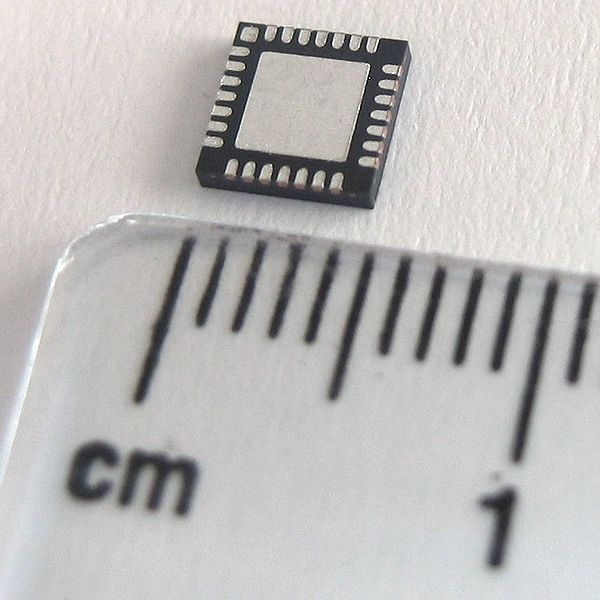
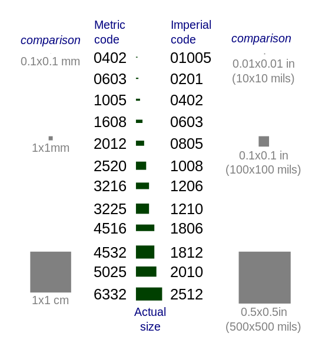

Dando sequência ao projeto iniciado na primeira parte vamos analisar as motivações para a seleção de um microcontrolador mas de forma mais específica. Nosso projeto é dedicado a ser compatível com o Arduino Zero e portanto nós vamos utilizar um microcontrolador da mesma família, entretanto vamos assumir que não sabemos ainda qual microcontrolador será utilizado e analisar algumas possibilidades na seleção.
Listando periféricos a partir da descrição/diagrama de blocos do projeto
Na primeira parte nós estabelecemos a necessidade de produzir uma descrição do projeto e um diagrama de blocos para definir os requisitos do mesmo. Dada a quantidade de opções disponíveis é interessante ter em mente alguns filtros macro, como por exemplo, você já investiu em ferramentas para uma determinada família, então tende a permanecer com ela, você já utiliza faz tempo um determinado microcontrolador e quer se manter na mesma família. Mas é importante verificar se esse filtro prévio não vai te atrapalhar, já vi algumas vezes essa escolha errada no começo mais atrapalhar que ajudar, caso seja o caso se possível reinicie do zero! A dívida técnica cobra juros mais pesados que os bancos brasileiros.
Que ferramentas usar:
- A busca da Digikey e da Mouser te darão alguns indícios iniciais
- O site do fabricante te dará as informações complementares
- Serviços como o Octoparts te darão informações sobre disponibilidade
Filtro inicial
A primeira etapa consiste em utilizar os sites das lojas listadas. As duas estão entre as maiores lojas de componentes eletrônicos do mundo, encontra-se de tudo por lá. Pessoalmente eu uso a Digikey como filtro inicial mas a Mouser funciona bem também. Navegue até o ponto em que irá selecionar microcontroladores e filtre inicialmente pelos periféricos que deseja. Há muita coisa disponível e nessa fase é interessante marcar o check-box "In stock" isso filtra coisas que estão normalmente fora de estoque e possuem disponibilidade somente sob consulta.
Atenção as tensões de alimentação
O segundo filtro a fazer é com relação aos limites de alimentação, já temos ideia de como será fornecida a energia a placa então é interessante não selecionar nenhum componente que esteja fora do range. O mais típico atualmente são microcontroladores alimentados em 3.3V. É importante lembrar que a tensão de alimentação está relacionada ao consumo e alguns microcontroladores internamente operam inclusive a tensões mais baixas (1.8V e 1.2V).
Quantidades de memória
Aqui a regra é simples: Utilize o máximo disponível. Com o tempo é possível ter uma ideia a priori de quanto de memória será consumido e possibilita filtrar componentes muito abaixo do necessário, como por exemplo um micro com 2KB de flash e 512B de RAM terá dificuldades e lidar com uma pilha TCP/IP. Mas mesmo com a experiência e principalmente se esta é a primeira versão de um produto, como é o caso que estamos tratando, selecione o máximo de memória disponível. Geralmente haverá possibilidade pra economizar a diferença e otimizar esse parâmetro. Aqui cabe avaliar memória flash e memória RAM mas a regra vale pras duas.
Packages
A escolha aqui é uma questão de habilidade e método. Se é você mesmo quem irá montar manualmente é bom escolher um package que não irá te atrapalhar. Não tenha medo de componentes SMD, soldá-los é mais fácil que parece, mesmo utilizando um ferro de solda comum.
Para microcontroladores há muitas opções disponíveis mas você deve ter uma ideia sobre a quantidade de pinos que precisa, deixe uma folga, nunca se sabe se será preciso acrescentar aquele recurso aos 48 do segundo tempo.
Se possui pouca habilidade e fará a montagem manualmente evite componentes do tipo QFN mas não os retire das opções ainda. Você certamente terá problemas em montar BGAs manualmente então retire os da lista. Para as primeiras aventuras com montagem de SMD SOIC, TSOP e xQFP são bem fáceis. Em todos os casos um pouco de paciência e um pouquinho de prática serão suficientes pra fazer a montagem. É provável que nessa etapa você acabe com um microcontrolador cujo package é um QFP. Adiante nós voltaremos a discutir sobre encapsulamentos. Não se preocupe com as siglas com o tempo elas serão familiares e os tamanhos também. Essa imagem da wikipedia dá uma ideia dos tamanhos.

Há ferramentas?
Alguns anos atrás a busca por ferramentas era mais espinhosa. O primeiro ARM7 que usei eu precisei de compilar o GCC(o compilador que vai transformar nosso texto em código executável) umas 3 vezes até chegar em algo funcional. Hoje há compiladores C disponíveis para todas as arquiteturas de forma gratuita. Basta seguir a instalação para a sua plataforma de uso. Adiante quando tratarmos de organizar a construção do firmware e bibliotecas retomamos o assunto.
É compatível com meu ciclo/ferramentas de desenvolvimento?
É preciso considerar o ciclo e ferramentas que serão utilizadas. Se pretende usar Linux ou Android você não conseguirá fazê-lo com desempenho aceitável em um AVR ou Cortex-Mx. Se deseja utilizar Elua ou Micropython opte por microcontroladores que tenham a possibilidade de suportar essas ferramentas.
Analisando disponibilidade
Um ponto importante antes de acrescentar aquele super sensor com todas as funções necessárias e que vale para todos os outros componentes é: Conseguirei comprar?
Muitas vezes um determinado componente, ou encapsulamento(package), é destinado a ser consumido em grandes quantidades e fica assim restrito o seu aceesso a produções em menor escala. Com isso você precisa observar os seus volumes de produção e capacidade de investimento.
Para verificar a disponibilidade eu costumo utilizar o Octoparts. O Paulo do Curtacircuitos criou um addon pro googledocs que vai nos ajudar posteriormente a acompanhar preço e disponibilidade dos componentes. Mas nesse momento nós queremos somente validar que o componente, no caso o microcontrolador, estará disponível.
Estudo de caso emmc vs cartão SD
Para um exemplo prático vamos considerar um projeto onde será necessária a utilização de algum meio de registro de informações, por exemplo imagens ou áudio e então arbitrou-se que pelo menos 8GB devem estar disponíveis no produto.
Se houver restrições de tamanho a utilização de um cartão SD pode ser danosa por conta do tamanho do dispositivo. Nesse caso podemos optar pelo uso de um cartão micro SD, resolvendo possivelmente a questão do tamanho. Esse é um ponto que devemos ter em mente, muitas vezes a solução possui diversas opções de tamanho, encapsulamento e pinos. É preciso analisar as opções e confrontá-las antes de escolher.
O cartão no formato micro SD acrescentará dois itens a nossa lista de materiais e um requisito à seleção do microcontrolador. Temos de acrescentar o cartão micro SD e o conector. Além disso temos de pensar que o mesmo terá de ser montado e como será o acesso ao cartão. Se o seu projeto é destinado ao seu uso somente isso não será um problema tão grande. Se o seu projeto pretende atingir mais que as pessoas do seu círculo de amizades a interface com o usuário precisa de algum pensamento.
Uma outra alternativa seria utilizar um eMMC. Podemos resumir o eMMC como sendo o cartão microSD em formato de circuito integrado. Um problema frente ao uso do cartão mais conector é que o encapsulamento não é amistoso para soldar manualmente. Uma vantagem é que em caso de montagem automática é um CI e não necessitará de nenhum passo extra de montagem. Em volume o custo tende a ser menor e o espaço ocupado na placa também. Uma questão é que não é fácil encontrá-los para comprar em poucas unidades. São muitas questões em aberto e isso vale para quase todas as escolhas do projeto. Avaliando o impacto na escolha do microcontrolador no caso do cartão você pode acessá-lo via SPI ou utilizando o controlador próprio caso o seu microcontrolador o possua. No caso do eMMC, não há a interface SPI.
Resumindo o caso: - Atente que há mais de uma opção para resolver todas as questões em um projeto - A resposta sobre melhor ou pior sempre depende do seu projeto em questão, seja por fatores técnicos ou econômicos. - Nos estágios iniciais opte pela opção mais rápida. Mas atente para deixar a possibilide de mudança para o futuro caso seja uma situação plausível de acontecer.
Na parte dois vamos tratar do esquemático e começar e ligar esses pontos com a mão na massa.